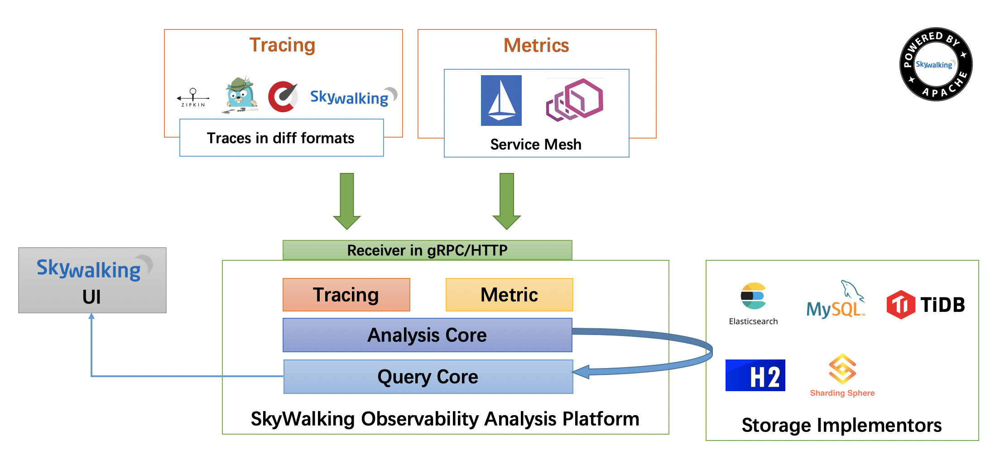
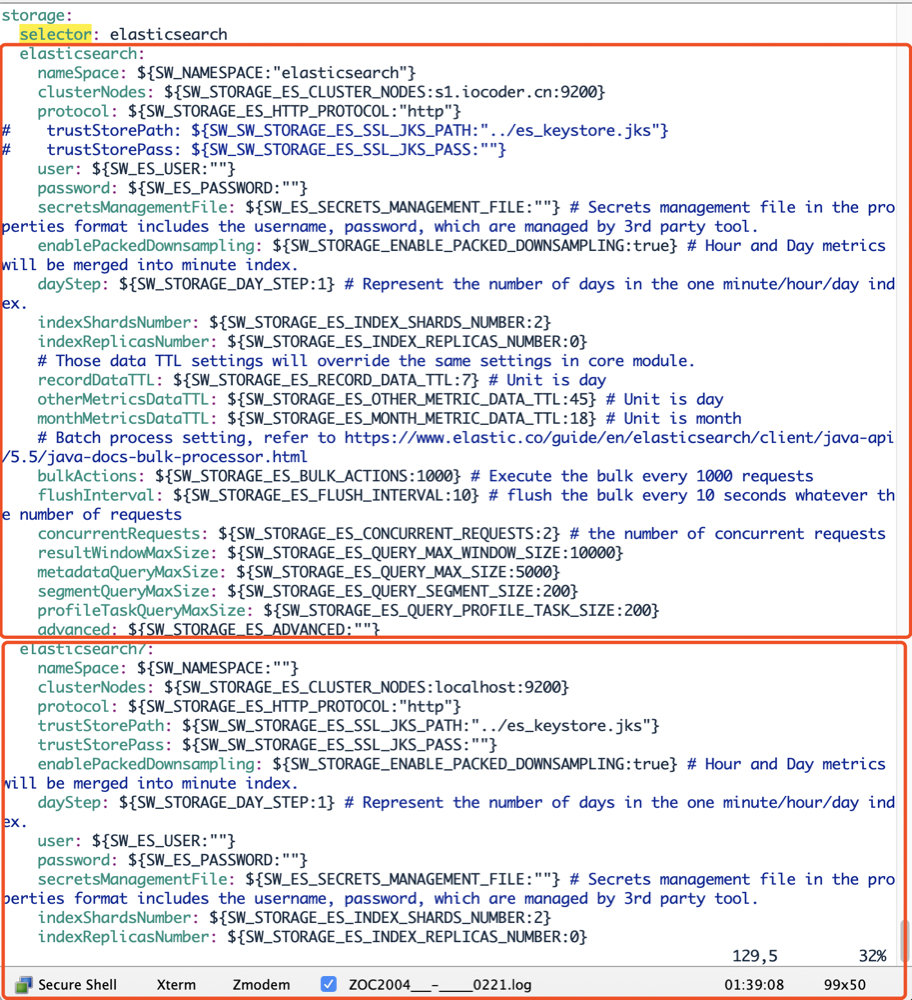
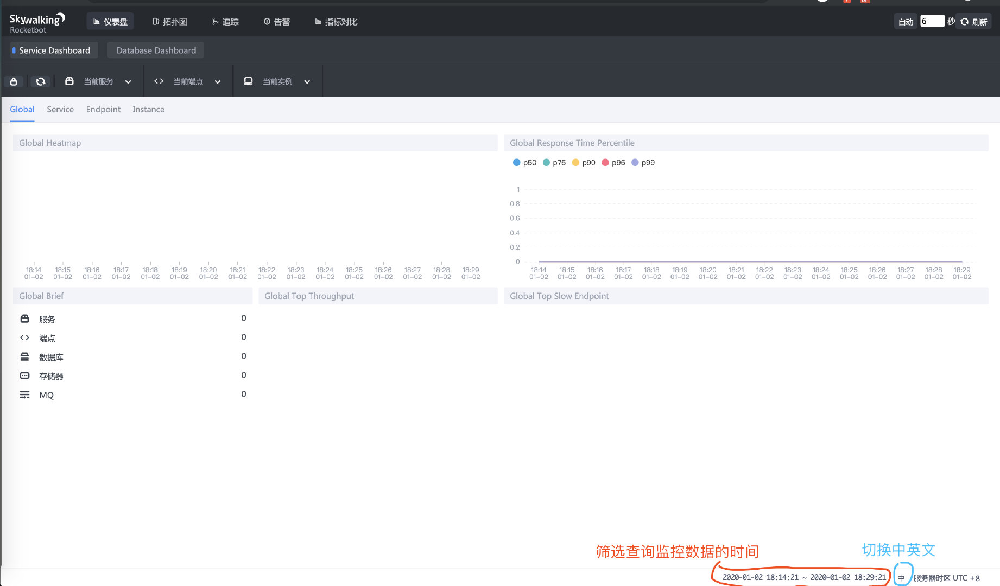

SkyWalking 极简入门
目录：
- 1. 概述
- 2. 搭建 SkyWalking 单机环境
- 3. 搭建 SkyWalking 集群环境
- 4. 告警
- 5. 注意事项
- 6. Spring Boot 使用示例
- 6. Spring Cloud 使用示例
1. 概述
1.1 概念
SkyWalking 是什么？
FROM http://skywalking.apache.org/
分布式系统的应用程序性能监视工具，专为微服务、云原生架构和基于容器（Docker、K8s、Mesos）架构而设计。
提供分布式追踪、服务网格遥测分析、度量聚合和可视化一体化解决方案。
1.2 功能列表
SkyWalking 有哪些功能？
FROM http://skywalking.apache.org/
- 多种监控手段。可以通过语言探针和 service mesh 获得监控是数据。
- 多个语言自动探针。包括 Java，.NET Core 和 Node.JS。
- 轻量高效。无需大数据平台，和大量的服务器资源。
- 模块化。UI、存储、集群管理都有多种机制可选。
- 支持告警。
- 优秀的可视化解决方案。
1.3 整体架构
SkyWalking 整体架构如何？
FROM http://skywalking.apache.org/

整个架构，分成上、下、左、右四部分：
考虑到让描述更简单，我们舍弃掉 Metric 指标相关，而着重在 Tracing 链路相关功能。
- 上部分 Agent ：负责从应用中，收集链路信息，发送给 SkyWalking OAP 服务器。目前支持 SkyWalking、Zikpin、Jaeger 等提供的 Tracing 数据信息。而我们目前采用的是，SkyWalking Agent 收集 SkyWalking Tracing 数据，传递给服务器。
- 下部分 SkyWalking OAP ：负责接收 Agent 发送的 Tracing 数据信息，然后进行分析(Analysis Core) ，存储到外部存储器( Storage )，最终提供查询( Query )功能。
- 右部分 Storage ：Tracing 数据存储。目前支持 ES、MySQL、Sharding Sphere、TiDB、H2 多种存储器。而我们目前采用的是 ES ，主要考虑是 SkyWalking 开发团队自己的生产环境采用 ES 为主。
- 左部分 SkyWalking UI ：负责提供控台，查看链路等等。
1.4 官方文档
在 https://github.com/apache/skywalking/tree/master/docs 地址下，提供了 SkyWalking 的英文文档。
考虑到大多数胖友的英语水平和艿艿不相伯仲，再加上胖友一开始对 SkyWalking 比较陌生，所以比较推荐先阅读 https://github.com/SkyAPM/document-cn-translation-of-skywalking 地址，提供了 SkyWalking 的中文文档。
考虑到胖友使用 SkyWalking 的目的，是实现分布式链路追踪的功能，所以最好去了解下相关的知识。这里推荐阅读两篇文章：
2. 搭建 SkyWalking 单机环境
考虑到让胖友更快的入门，我们来搭建一个 SkyWalking 单机环境，步骤如下：

- 第一步，搭建一个 Elasticsearch 服务。
- 第二步，下载 SkyWalking 软件包。
- 第三步，搭建一个 SkyWalking OAP 服务。
- 第四步，启动一个 Spring Boot 应用，并配置 SkyWalking Agent。
- 第五步，搭建一个 SkyWalking UI 服务。
仅仅五步，按照艿艿标题党的性格，应该给本文取个《10 分钟快速搭建 SkyWalking 服务》标题才对，哈哈哈。
2.1 Elasticsearch 搭建
FROM https://www.elastic.co/cn/products/elasticsearch
Elasticsearch 是一个分布式、RESTful 风格的搜索和数据分析引擎，能够解决不断涌现出的各种用例。 作为 Elastic Stack 的核心，它集中存储您的数据，帮助您发现意料之中以及意料之外的情况。
参考《Elasticsearch 极简入门》的「1. 单机部署」小节，搭建一个 Elasticsearch 单机服务。
不过要注意，本文使用的是 Elasticsearch 7.5.1 版本。因为 SkyWalking 6.6.0 版本，增加了对 Elasticsearch 7.X 版本的支持。当然，如果胖友使用 Elasticsearch 6.X 版本也是可以的。
2.2 下载 SkyWalking 软件包
对于 SkyWalking 的软件包，有两种方式获取：
- 手动编译
- 官方包
一般情况下，我们建议使用官方包。手动编译，更多是尝鲜或者等着急修复的 BUG 的版本。
2.2.1 官方包
在 http://skywalking.apache.org/downloads/ 下，我们下载操作系统对应的发布版。
这里，我们选择 Binary Distribution for ElasticSearch 7 (Linux) 版本，因为艿艿是 Mac 环境，再加上想使用 Elasticsearch 7.X 版本作为存储。如果胖友想用 Elasticsearch 6.X 版本作为存储，记得下载 Binary Distribution (Linux) 版本。
① 下载：
# 创建目录
$ mkdir -p /Users/yunai/skywalking
$ cd /Users/yunai/skywalking
# 下载
$ wget http://mirror.bit.edu.cn/apache/skywalking/6.6.0/apache-skywalking-apm-es7-6.6.0.tar.gz
② 解压：
# 解压
$ tar -zxvf apache-skywalking-apm-es7-6.6.0.tar.gz
$ cd apache-skywalking-apm-bin-es7
$ ls -ls
4 drwxr-xr-x 8 root root 4096 Sep 9 15:09 agent # SkyWalking Agent
4 drwxr-xr-x 2 root root 4096 Sep 9 15:44 bin # 执行脚本
4 drwxr-xr-x 2 root root 4096 Sep 9 15:44 config # SkyWalking OAP Server 配置文件
32 -rwxr-xr-x 1 root root 28903 Sep 9 14:32 LICENSE
4 drwxr-xr-x 3 root root 4096 Sep 9 15:44 licenses
32 -rwxr-xr-x 1 root root 31850 Sep 9 14:32 NOTICE
16 drwxr-xr-x 2 root root 16384 Sep 9 15:22 oap-libs # SkyWalking OAP Server
4 -rw-r--r-- 1 root root 1978 Sep 9 14:32 README.txt
4 drwxr-xr-x 2 root root 4096 Sep 9 15:44 webapp # SkyWalking UI
2.2.2 手动编译
友情提示：如果胖友没有编译 SkyWalking 源码的诉求，可以跳过本小节。
参考 How to build project 文章。
需要前置安装如下：
- GIT
- JDK 8+
- Maven
① 克隆代码：
$ git clone https://github.com/apache/skywalking.git
- 因为网络问题，可能克隆会有点久。
② 初始化子模块：
$ cd skywalking
$ git submodule init
$ git submodule update
③ 编译
$ ./mvnw clean package -DskipTests
- 编译过程，如果机子比较差，花费时间会比较久。
④ 查看编译结果
$ cd apm-dist # 编译结果目录
$ cd target
$ tar -zxvf apache-skywalking-apm-bin.tar.gz # 解压 Linux 包
$ cd apache-skywalking-apm-bin
$ ls -ls
4 drwxr-xr-x 8 root root 4096 Sep 9 15:09 agent # SkyWalking Agent
4 drwxr-xr-x 2 root root 4096 Sep 9 15:44 bin # 执行脚本
4 drwxr-xr-x 2 root root 4096 Sep 9 15:44 config # SkyWalking OAP Server 配置文件
32 -rwxr-xr-x 1 root root 28903 Sep 9 14:32 LICENSE
4 drwxr-xr-x 3 root root 4096 Sep 9 15:44 licenses
32 -rwxr-xr-x 1 root root 31850 Sep 9 14:32 NOTICE
16 drwxr-xr-x 2 root root 16384 Sep 9 15:22 oap-libs # SkyWalking OAP Server
4 -rw-r--r-- 1 root root 1978 Sep 9 14:32 README.txt
4 drwxr-xr-x 2 root root 4096 Sep 9 15:44 webapp # SkyWalking UI
2.3 SkyWalking OAP 搭建
① 修改 OAP 配置文件
友情提示：如果配置文件，适合 SkyWalking 6.X 版本。
$ vi config/application.yml
storage:
elasticsearch7:
nameSpace: ${SW_NAMESPACE:"elasticsearch"}
clusterNodes: ${SW_STORAGE_ES_CLUSTER_NODES:localhost:9200}
protocol: ${SW_STORAGE_ES_HTTP_PROTOCOL:"http"}
# trustStorePath: ${SW_SW_STORAGE_ES_SSL_JKS_PATH:"../es_keystore.jks"}
# trustStorePass: ${SW_SW_STORAGE_ES_SSL_JKS_PASS:""}
user: ${SW_ES_USER:""}
password: ${SW_ES_PASSWORD:""}
indexShardsNumber: ${SW_STORAGE_ES_INDEX_SHARDS_NUMBER:2}
indexReplicasNumber: ${SW_STORAGE_ES_INDEX_REPLICAS_NUMBER:0}
# Those data TTL settings will override the same settings in core module.
recordDataTTL: ${SW_STORAGE_ES_RECORD_DATA_TTL:7} # Unit is day
otherMetricsDataTTL: ${SW_STORAGE_ES_OTHER_METRIC_DATA_TTL:45} # Unit is day
monthMetricsDataTTL: ${SW_STORAGE_ES_MONTH_METRIC_DATA_TTL:18} # Unit is month
# Batch process setting, refer to https://www.elastic.co/guide/en/elasticsearch/client/java-api/5.5/java-docs-bulk-processor.html
bulkActions: ${SW_STORAGE_ES_BULK_ACTIONS:1000} # Execute the bulk every 1000 requests
flushInterval: ${SW_STORAGE_ES_FLUSH_INTERVAL:10} # flush the bulk every 10 seconds whatever the number of requests
concurrentRequests: ${SW_STORAGE_ES_CONCURRENT_REQUESTS:2} # the number of concurrent requests
resultWindowMaxSize: ${SW_STORAGE_ES_QUERY_MAX_WINDOW_SIZE:10000}
metadataQueryMaxSize: ${SW_STORAGE_ES_QUERY_MAX_SIZE:5000}
segmentQueryMaxSize: ${SW_STORAGE_ES_QUERY_SEGMENT_SIZE:200}
# h2:
# driver: ${SW_STORAGE_H2_DRIVER:org.h2.jdbcx.JdbcDataSource}
# url: ${SW_STORAGE_H2_URL:jdbc:h2:mem:skywalking-oap-db}
# user: ${SW_STORAGE_H2_USER:sa}
# metadataQueryMaxSize: ${SW_STORAGE_H2_QUERY_MAX_SIZE:5000}
storage.elasticsearch7配置项，设置使用 Elasticsearch 7.X 版本作为存储器。- 这里，我们打开注释，并记得通过
nameSpace设置 Elasticsearch 集群名。
- 这里，我们打开注释，并记得通过
storage.elasticsearch配置项，设置使用 Elasticsearch 6.X 版本作为存储器。- 这里，我们无需做任何改动。
- 如果胖友使用 Elasticsearch 6.X 版本作为存储器，记得设置这个配置项，而不是
storage.elasticsearch7配置项。
storage.h2配置项，设置使用 H2 作为存储器。- 这里，我们需要手动注释掉，因为 H2 是默认配置的存储器。
友情提示：如果配置文件，适合 SkyWalking 7.X 版本。

- 重点修改
storage配置项，通过storage.selector配置项来设置具体使用的存储器。 storage.elasticsearch配置项，设置使用 Elasticsearch 6.X 版本作为存储器。胖友可以主要修改nameSpace、clusterNodes两个配置项即可，设置使用的 Elasticsearch 的集群和命名空间。storage.elasticsearch7配置项，设置使用 Elasticsearch 7.X 版本作为存储器。- 还有 MySQL、H2、InfluxDB 等等存储器的配置可以选择，胖友自己根据需要去选择哈~
② 启动 SkyWalking OAP 服务
$ bin/oapService.sh
SkyWalking OAP started successfully!
是否真正启动成功，胖友打开 logs/skywalking-oap-server.log 日志文件，查看是否有错误日志。首次启动时，因为 SkyWalking OAP 会创建 Elasticsearch 的索引，所以会“疯狂”的打印日志。最终，我们看到如下日志，基本可以代表 SkyWalking OAP 服务启动成功：
友情提示：因为首次启动会创建 Elasticsearch 索引，所以可能会比较慢。
2020-01-02 18:22:53,635 - org.eclipse.jetty.server.Server - 444 [main] INFO [] - Started @35249ms
2.4 SkyWalking UI 搭建
① 启动 SkyWalking UI 服务
bin/webappService.sh
SkyWalking Web Application started successfully!
是否真正启动成功，胖友打开 logs/logs/webapp.log 日志文件，查看是否有错误日志。最终，我们看到如下日志，基本可以代表 SkyWalking UI 服务启动成功：
2020-01-02 18:27:02.824 INFO 48250 --- [main] o.a.s.apm.webapp.ApplicationStartUp : Started ApplicationStartUp in 7.774 seconds (JVM running for 8.316)
如果想要修改 SkyWalking UI 服务的参数，可以编辑 webapp/webapp.yml 配置文件。例如说：
server.port：SkyWalking UI 服务端口。collector.ribbon.listOfServers：SkyWalking OAP 服务地址数组。因为 SkyWalking UI 界面的数据，是通过请求 SkyWalking OAP 服务来获得的。
② 访问 UI 界面：
浏览器打开 http://127.0.0.1:8080 。界面如下图：
2.5 SkyWalking Agent
大多数情况下，我们在启动项目的 Shell 脚本上，通过 -javaagent 参数进行配置 SkyWalking Agent 。我们在 「2.3.1 Shell」 小节来看。
考虑到偶尔我们需要在 IDE 中，也希望使用 SkyWalking Agent ，所以我们在 「2.3.2 IDEA」 小节来看。
2.3.1 Shell
① Agent 软件包
我们需要将 apache-skywalking-apm-bin/agent 目录，拷贝到 Java 应用所在的服务器上。这样，Java 应用才可以配置使用该 SkyWalking Agent。我们来看看 Agent 目录下有哪些：
$ ls -ls
total 35176
0 drwxr-xr-x@ 7 yunai staff 224 Dec 24 14:20 activations
0 drwxr-xr-x@ 4 yunai staff 128 Dec 24 14:21 bootstrap-plugins
0 drwxr-xr-x@ 3 yunai staff 96 Dec 24 14:12 config # SkyWalking Agent 配置
0 drwxr-xr-x@ 3 yunai staff 96 Jan 2 19:29 logs # SkyWalking Agent 日志
0 drwxr-xr-x@ 13 yunai staff 416 Dec 24 14:22 optional-plugins # 可选插件
0 drwxr-xr-x@ 68 yunai staff 2176 Dec 24 14:20 plugins # 插件
35176 -rw-r--r--@ 1 yunai staff 18006420 Dec 24 14:12 skywalking-agent.jar # SkyWalking Agent
- 关于 SkyWalking Agent 提供的插件列表，可以看看《SkyWalking 文档 —— 插件支持列表》。
因为艿艿是在本机测试，所以无需拷贝，SkyWalking Agent 目录是 /Users/yunai/skywalking/apache-skywalking-apm-bin-es7/agent/。
考虑到方便胖友，艿艿这里提供了一个最简的 Spring Boot 应用 lab-39-demo-2.2.2.RELEASE.jar。对应 Github 仓库是 lab-39-demo。
② 配置 Java 启动脚本
# SkyWalking Agent 配置
export SW_AGENT_NAME=demo-application # 配置 Agent 名字。一般来说，我们直接使用 Spring Boot 项目的 `spring.application.name` 。
export SW_AGENT_COLLECTOR_BACKEND_SERVICES=127.0.0.1:11800 # 配置 Collector 地址。
export SW_AGENT_SPAN_LIMIT=2000 # 配置链路的最大 Span 数量。一般情况下，不需要配置，默认为 300 。主要考虑，有些新上 SkyWalking Agent 的项目，代码可能比较糟糕。
export JAVA_AGENT=-javaagent:/Users/yunai/skywalking/apache-skywalking-apm-bin-es7/agent/skywalking-agent.jar # SkyWalking Agent jar 地址。
# Jar 启动
java -jar $JAVA_AGENT -jar lab-39-demo-2.2.2.RELEASE.jar
- 通过环境变量，进行配置。
- 更多的变量，可以在
/work/programs/skywalking/apache-skywalking-apm-bin/agent/config/agent.config查看。要注意，可能有些变量是被注释掉的，例如说SW_AGENT_SPAN_LIMIT对应的agent.span_limit_per_segment。
③ 执行脚本：
直接执行上述的 Shell 脚本，启动 Java 项目。在启动日志中，我们可以看到 SkyWalking Agent 被加载的日志。日志示例如下：
DEBUG 2020-01-02 19:29:29:400 main AgentPackagePath : The beacon class location is jar:file:/Users/yunai/skywalking/apache-skywalking-apm-bin-es7/agent/skywalking-agent.jar!/org/apache/skywalking/apm/agent/core/boot/AgentPackagePath.class.
INFO 2020-01-02 19:29:29:402 main SnifferConfigInitializer : Config file found in /Users/yunai/skywalking/apache-skywalking-apm-bin-es7/agent/config/agent.config.
同时，也可以在 /Users/yunai/skywalking/apache-skywalking-apm-bin-es7/agent/agent/logs/skywalking-api.log 查看对应的 SkyWalking Agent 日志。日志示例如下：
DEBUG 2020-01-02 19:37:22:539 SkywalkingAgent-5-ServiceAndEndpointRegisterClient-0 ServiceAndEndpointRegisterClient : ServiceAndEndpointRegisterClient running, status:CONNECTED.
- 这里，我们看到
status:CONNECTED，表示 SkyWalking Agent 连接 SkyWalking OAP 服务成功。
④ 简单测试
完事，可以去 SkyWalking UI 查看是否链路收集成功。
1、首先，使用浏览器，访问下 http://127.0.0.1:8079/demo/echo 地址，请求下 Spring Boot 应用提供的 API。因为，我们要追踪下该链路。
2、然后，继续使用浏览器，打开 http://127.0.0.1:8080/ 地址，进入 SkyWalking UI 界面。如下图所示：
这里，我们会看到 SkyWalking 中非常重要的三个概念：
-
服务(Service) ：表示对请求提供相同行为的一系列或一组工作负载。在使用 Agent 或 SDK 的时候，你可以定义服务的名字。如果不定义的话，SkyWalking 将会使用你在平台（例如说 Istio）上定义的名字。
这里，我们可以看到 Spring Boot 应用的服务为
"demo-application"，就是我们在环境变量SW_AGENT_NAME中所定义的。 -
服务实例(Service Instance) ：上述的一组工作负载中的每一个工作负载称为一个实例。就像 Kubernetes 中的 pods 一样, 服务实例未必就是操作系统上的一个进程。但当你在使用 Agent 的时候, 一个服务实例实际就是操作系统上的一个真实进程。
这里，我们可以看到 Spring Boot 应用的服务为
{agent_name}-pid:{pid}@{hostname}，由 Agent 自动生成。关于它，我们在「5.1 hostname」小节中，有进一步的讲解，胖友可以瞅瞅。 -
端点(Endpoint) ：对于特定服务所接收的请求路径, 如 HTTP 的 URI 路径和 gRPC 服务的类名 + 方法签名。
这里，我们可以看到 Spring Boot 应用的一个端点，为 API 接口
/demo/echo。
3、之后，点击「拓扑图」菜单，进入查看拓扑图的界面。如下图所示：
4、再之后，点击「追踪」菜单，进入查看链路数据的界面。如下图所示：
2.3.2 IDEA
我们统一使用 IDEA 作为开发 IDE ，所以忽略 Eclipse 的配置方式。
具体参考下图，比较简单：
3. 搭建 SkyWalking 集群环境
在生产环境下，我们一般推荐搭建 SkyWalking 集群环境。😈 当然，如果公司比较抠门，也可以在生产环境下使用 SkyWalking 单机环境，毕竟 SkyWalking 挂了之后，不影响业务的正常运行。
搭建一个 SkyWalking 集群环境，步骤如下：
- 第一步，搭建一个 Elasticsearch 服务的集群。
- 第二步，搭建一个注册中心的集群。目前 SkyWalking 支持 Zookeeper、Kubernetes、Consul、Nacos 作为注册中心。
- 第三步，搭建一个 SkyWalking OAP 服务的集群，同时参考《SkyWalking 文档 —— 集群管理》，将 SkyWalking OAP 服务注册到注册中心上。
- 第四步，启动一个 Spring Boot 应用，并配置 SkyWalking Agent。另外，在设置 SkyWaling Agent 的
SW_AGENT_COLLECTOR_BACKEND_SERVICES地址时，需要设置多个 SkyWalking OAP 服务的地址数组。 - 第五步，搭建一个 SkyWalking UI 服务的集群，同时使用 Nginx 进行负载均衡。另外，在设置 SkyWalking UI 的
collector.ribbon.listOfServers地址时，也需要设置多个 SkyWalking OAP 服务的地址数组。
😈 具体的搭建过程，并不复杂，胖友自己去尝试下。
4. 告警
在 SkyWaling 中，已经提供了告警功能，具体可见《SkyWalking 文档 —— 告警》。
默认情况下，SkyWalking 已经内置告警规则。同时，我们可以参考告警规则，进行自定义。
在满足 SkyWalking 告警规则的触发规则时，我们在 SkyWaling UI 的告警界面，可以看到告警内容。如下图所示：
同时，我们自定义 Webhook ，对接 SkyWalking 的告警请求。而具体的邮箱、钉钉等告警方式，需要自己进行开发。至于自定义 WebHook 如何实现，可以参考：
- Java 语言：
- Go 语言：
5. 注意事项
5.1 hostname 配置
在 SkyWalking 中，每个被监控的实例的名字，会包含 hostname 。格式为：{agent_name}-pid:{pid}@{hostname} ，例如说："scrm-scheduler-pid:27629@iZbp1e2xlyvr7fh67qi59oZ" 。
因为有些服务器未正确设置 hostname ，所以我们一定要去修改，不然都不知道是哪个服务器上的实例（😈 鬼知道 "iZbp1e2xlyvr7fh67qi59oZ" 一串是哪个服务器啊）。
修改方式如下：
1、修改 /etc/hosts 的 hostname ：
127.0.0.1 localhost
::1 localhost localhost.localdomain localhost6 localhost6.localdomain6
10.80.62.151 pre-app-01 # 就是这个，其中 10.80.62.151 是本机内网 IP ，pre-app-01 是 hostname 。
2、修改本机 hostname ：
$ hostname pre-app-01 # 其中 pre-app-01 就是你希望的 hostname 。
$ hostnamectl set-hostname pre-app-01 # 其中 pre-app-01 就是你希望的 hostname 。
6. Spring Boot 使用示例
在 《芋道 Spring Boot 链路追踪 SkyWalking 入门》 中，我们来详细学习如何在 Spring Boot 中，整合并使用 SkyWalking 收集链路数据。😈 相比「2.5 SkyWaling Agent」来说，我们会提供更加丰富的示例哟。
7. Spring Cloud 使用示例
在 《芋道 Spring Cloud 链路追踪 SkyWalking 入门》 中，我们来详细学习如何在 Spring Cloud 中，整合并使用 SkyWalking 收集链路数据。😈 相比「2.5 SkyWaling Agent」来说，我们会提供更加丰富的示例哟。
666. 彩蛋
本文仅仅是简单的 SkyWalking 入门文章，如果胖友想要更好的使用 SkyWalking，推荐通读下《SkyWalking 文档》。
想要进一步深入的胖友，也可以阅读如下资料：
😈 最后弱弱的问一句，上完 SkyWaling 之后，有没发现自己系统各种地方慢慢慢！嘻嘻。